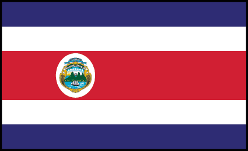
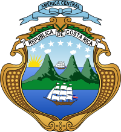
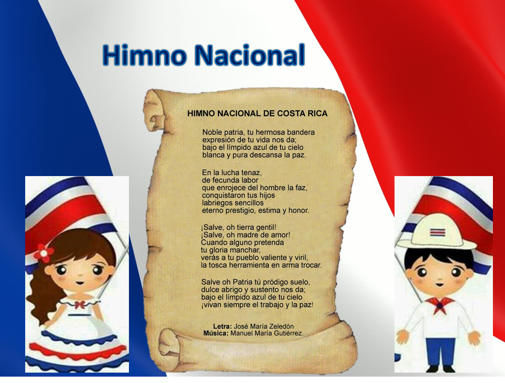
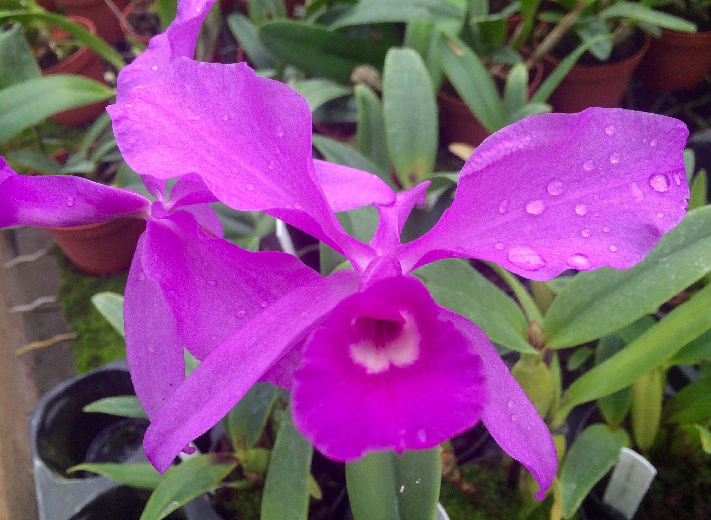
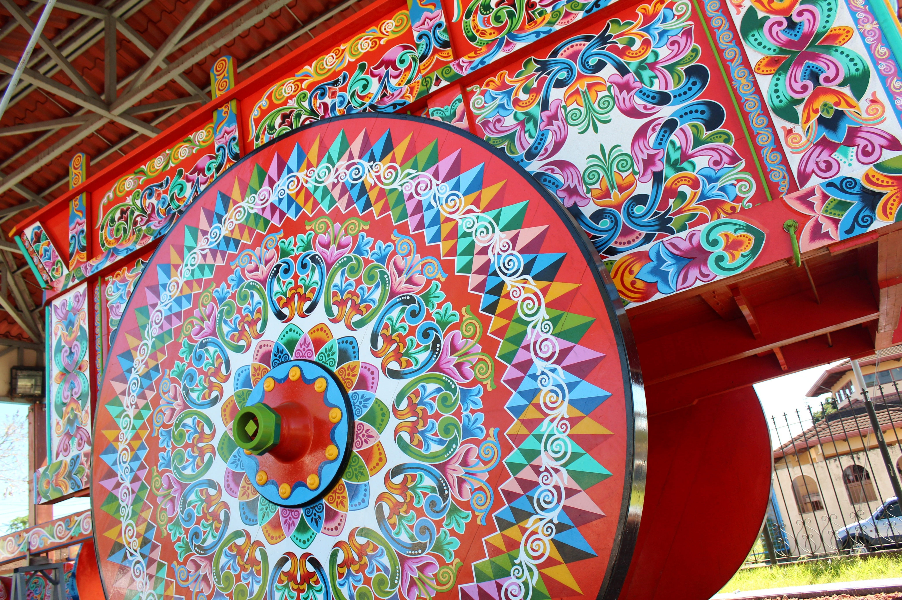
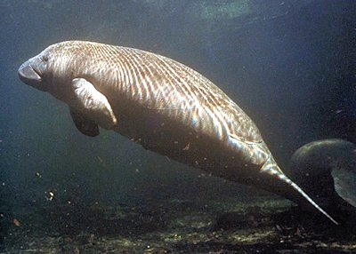
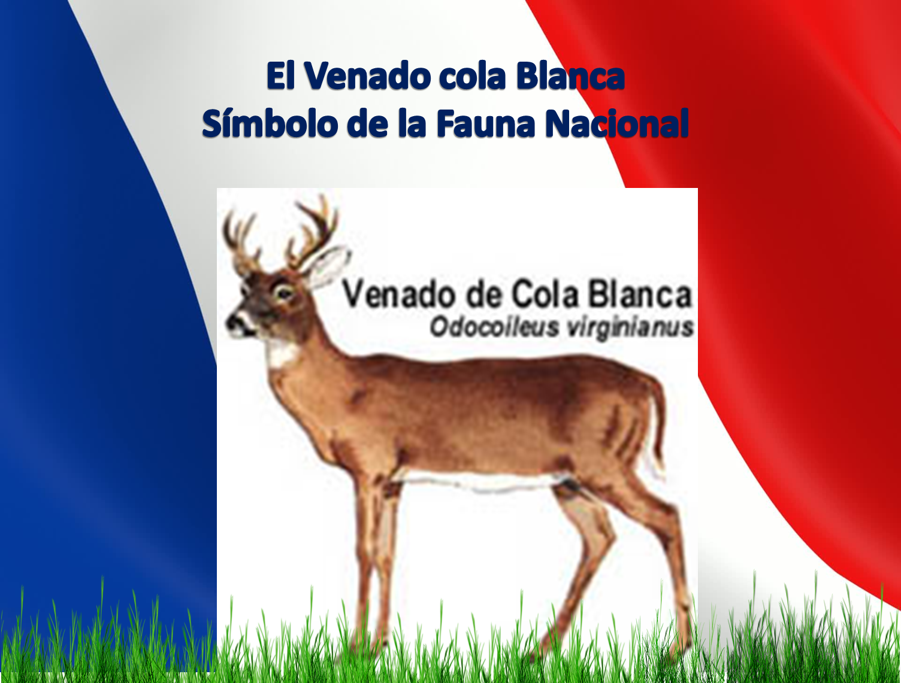

Bienvenido a nuestra página sobre Costa Rica
Costa Rica, oficialmente República de Costa Rica, es un Estado soberano organizado como una república presidencialista unitaria compuesta por 7 provincias. Ubicado en Centroamérica, posee un territorio con un área total de 51 179 km². Limita con Nicaragua al norte, el mar Caribe al este, Panamá al sureste y el océano Pacífico al oeste. En cuanto a los bordes marítimos, colinda con Nicaragua, Colombia, Panamá y Ecuador. Cuenta con 5 226 362 habitantes. Su capital, centro político y económico es San José, y su idioma oficial es el español. Su punto más austral es la Isla del Coco. Con una sólida y longeva democracia, de entre las más funcionales del mundo, y una eficaz capacidad de movilidad social que le permite alcanzar un elevado progreso general en relación con la distribución y tamaño de su economía, Costa Rica es el quincuagésimo país más rico del mundo según datos del Fondo Monetario Internacional y uno de los más estables de América, obteniendo resultados generalmente favorables en todos los índices de desarrollo y competitividad. Aunado a esto, posee diversas políticas a la vanguardia para la protección del ambiente y es una nación desmilitarizada por voluntad propia desde 1948, manteniendo un elevado nivel de prosperidad de acuerdo al Instituto Legatum, y habiendo sido considerada la sociedad más feliz del planeta, durante más de una década, según New Economics Foundation. De forma paralela, el país actualmente afronta importantes retos en su desarrollo relacionados con su desgastada infraestructura vial y de transporte, las cuales presentan una complicada capacidad para mejorar a corto plazo; el déficit fiscal, la sostenibilidad y eficacia de su Estado benefactor, el estancamiento en el combate a la pobreza, la tendencia al alza en sus tasas de delincuencia, desempleo y desigualdad; así como profundos problemas ecológicos relacionados con prácticas agrícolas nocivas, mala gestión de residuos y contaminación de cuerpos de agua.
Historia de Costa Rica
La historia de Costa Rica es el estudio, descripción y análisis de los principales procesos y acontecimientos históricos de este país centroamericano. El periodo de estudio que corresponde a la era prehispánica de Costa Rica abarca desde la llegada de los primeros pobladores alrededor de 12.000 años antes de nuestra era hasta el contacto de las sociedades nativas con los íberos en 1502. Los asentamientos humanos en la Costa Rica prehispánica cumplieron una función de puente cultural entre el Sur y el Norte del continente, y la orfebrería y la cerámica policromada tuvieron un amplio desarrollo y hermosos resultados. Los españoles llegaron en el siglo XVI y la colonización de Costa Rica comenzó en 1522. El país fue denominado "Costa Rica" por los exploradores españoles que ingresaron al territorio años después, para diferenciarlo de la región de Veragua. Los asentamientos en la Costa Rica colonial, y especialmente a partir del siglo XVII, comenzaron a establecer una marcada diferenciación social, con una élite comercial y terrateniente que manejaba a su antojo los hilos de la economía y la política interna. Costa Rica obtuvo su independencia el 15 de septiembre de 1821 y se unió a la República Federal de Centroamérica, de la que formó parte entre 1824 y 1838. Sin embargo, esta federación se disolvió en 1838 debido a luchas internas entre estados, y gradualmente cada provincia declaró su independencia. Así, el 31 de agosto de 1848, Costa Rica se convirtió en República, siendo José María Castro Madriz el último jefe de Estado y el primer presidente de la República. Costa Rica abolió sus fuerzas militares el 1 de diciembre de 1948 y desde entonces ha dedicado importantes recursos a la inversión en salud y educación. El país está ubicado en el corazón de América, su capital es San José y su idioma oficial es el español. Fue el primer país de Latinoamérica en ser iluminado con energía eléctrica y es una de las democracias más consolidadas de América. Costa Rica presenta hoy un mosaico étnico y cultural producto de una fuerte influencia de diversas mezclas de grupos, costumbres y tradiciones, a través de las cuales la cultura española, fomentada por los colonizadores, las culturas indígenas mesoamericanas y caribeñas, propias de su ubicación geográfica , están integrados.
Los Simbolos de Costa Rica
Costa Rica tiene varios símbolos patrios que representan al país ya su gente. Los símbolos patrios más importantes son:
La Bandera
La bandera tricolor tiene franjas blancas, azules y rojas, y fue creada en 1848 por doña Pacífica Fernández, esposa del entonces presidente Dr. José Ma. Castro Madriz, recordando los colores de la bandera francesa.
El Escudo
El escudo nacional representa tres volcanes y un extenso valle entre dos océanos, y en cada uno de estos, un buque mercante. En el extremo izquierdo de la línea superior que marca el horizonte, hay un sol naciente. Completan el escudo dos palmeras de arrayán, unidas por una ancha cinta blanca y que contiene la leyenda "República de Costa Rica" en letras doradas.
El Himno
El himno nacional fue declarado símbolo nacional en 1949, y su enseñanza es obligatoria en las actividades patrias más importantes
Flor nacional
La Guaria Morada es la flor nacional de Costa Rica, y fue elegida a finales de la década de 1930 a través de un concurso organizado por el Club Rotario y el Club de Jardinería. La flor tenía que estar presente en todo Costa Rica, ser originaria de América y estar presente en las costumbres y leyendas del país
el Ave
.jpeg)
El Yigüirro es el ave nacional de Costa Rica, y es conocido por su hermoso canto, que anuncia la llegada de la temporada de lluvias
La Carreta Tipica
La Carreta Típica es una típica carreta de bueyes que se utilizaba para transportar los granos de café desde los campos hasta las plantas procesadoras. Es un símbolo de las tradiciones rurales del país y fue declarado Patrimonio Cultural Inmaterial de la Humanidad por la UNESCO en 2005
Biodiversidad
 El Manatí y el Venado Cola Blanca: El Manatí y el Venado Cola Blanca son símbolos patrios que representan la biodiversidad del país
Costa Rica también tiene otros símbolos patrios, como el árbol nacional, el Guanacaste, y el café nacional, que fue declarado símbolo patrio en 2020
La Extensión Territorial en Costa Rica
Costa Rica tiene una extensión territorial de 51,100 km², incluyendo su área insular. Además, cuenta con más de 550,000 km² de mar territorial y zona económica exclusiva. Limita con Nicaragua al norte, el mar Caribe al este, Panamá al sureste y el océano Pacífico al oeste
Turismo en Costa Rica
Costa Rica es un país lleno de bellezas naturales y lugares turísticos que ofrecen una gran variedad de actividades para todos los gustos. A continuación, se presentan algunos de los lugares turísticos más populares de Costa Rica, según los resultados de la búsqueda
- 1.Parque Nacional Manuel Antonio: Este parque nacional es uno de los lugares turísticos más populares de
Costa Rica. Ofrece una gran variedad de actividades, como caminatas por la selva, observación de
animales, playas de arena blanca y aguas cristalinas.
- 2.Volcán Arenal: Este volcán es uno de los lugares turísticos más impresionantes de Costa Rica. Los
visitantes pueden disfrutar de caminatas por la selva, aguas termales y una gran variedad de actividades
al aire libre.
- 3.Monteverde: Esta reserva biológica es famosa por su bosque nuboso y su gran variedad de flora y fauna.
Los visitantes pueden disfrutar de caminatas por la selva, canopy tours y observación de aves.
- 4.Tamarindo: Esta playa es uno de los lugares turísticos más populares de Costa Rica. Ofrece una gran
variedad de actividades acuáticas, como surf, paddleboarding y kayak.
- 5.Río Celeste: Este río es famoso por su color azul turquesa y es uno de los lugares turísticos más
impresionantes de Costa Rica. Los visitantes pueden disfrutar de caminatas por la selva y observación de
animales.
- 6.Parque Nacional Corcovado: Este parque nacional es uno de los lugares turísticos más impresionantes de
Costa Rica. Ofrece una gran variedad de actividades, como caminatas por la selva, observación de
animales y playas de arena blanca.
- 7.Jacó: Esta playa es uno de los lugares turísticos más populares de Costa Rica. Ofrece una gran
variedad
de actividades acuáticas, como surf, paddleboarding y kayak.
- 8.Las playas de Nosara: Esta playa es famosa por sus olas perfectas para surfear y su ambiente relajado.
- 9.Parque Nacional Isla del Coco: Esta isla es uno de los lugares turísticos más impresionantes de Costa
Rica. Ofrece una gran variedad de actividades acuáticas, como buceo y snorkel.
- 10.Playa Santa Teresa: Esta playa es famosa por sus olas perfectas para surfear y su ambiente relajado.
En resumen, Costa Rica ofrece una gran variedad de lugares turísticos que van desde playas, parques nacionales, reservas biológicas y volcanes, entre otros. Los visitantes pueden disfrutar de una gran variedad de actividades al aire libre y observar la impresionante flora y fauna que el país tiene para ofrecer.


Organización territorial de Costa Rica
La organización territorial de Costa Rica se divide en tres tipos de entidad subnacional: provincias, cantones y distritos. Actualmente, Costa Rica cuenta con 7 provincias, 81 cantones y 463 distritos. Las municipalidades de cada cantón o gobiernos locales están encabezados por alcaldes, electos cada cuatro años en elecciones generales, y un Concejo Municipal. A continuación, se presenta una tabla resumen donde se mencionan las siete provincias y sus principales características:
| Provincia | Cabecera | Cantones | Distritos | Habitantes | Extension en km2 |
|---|---|---|---|---|---|
| San José | San José | 20 | 123 | 1,696,265 | 4,965.90 |
| Alajuela | Alajuela | 16 | 116 | 1,068,258 | 9,757.53 |
| Cartago | Cartago | 8 | 48 | 432,395 | 3,124.67 |
| Heredia | Heredia | 10 | 46 | 354,732 | 2,656.98 |
| Guanacaste | Liberia | 11 | 59 | 264,238 | 10,140.71 |
| Puntarenas | Puntarenas | 11 | 57 | 357,483 | 11,265.69 |
| Limón | Limón | 6 | 27 | 339,295 | 9,188.52 |